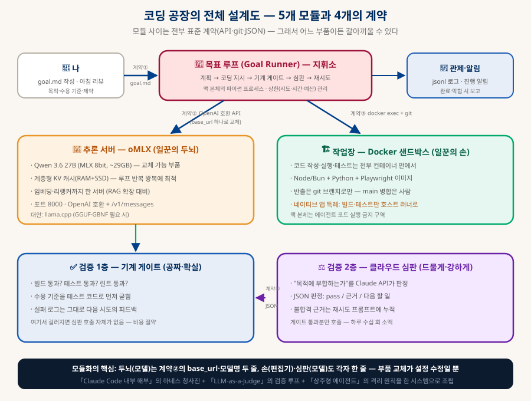
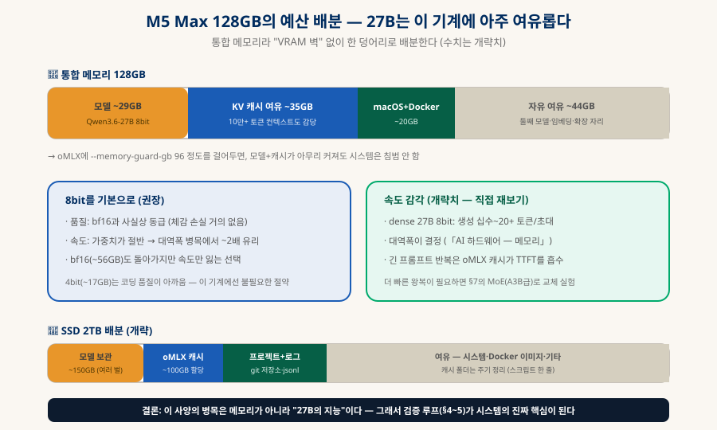
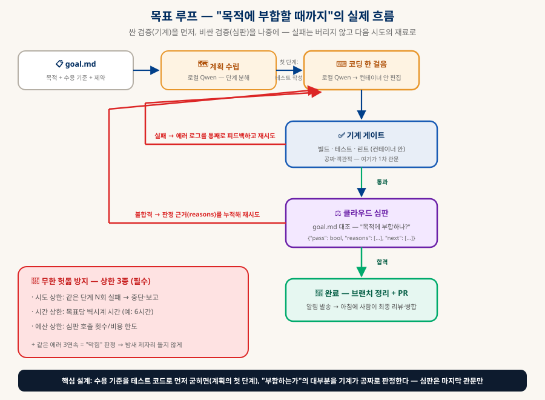

로컬 LLM 코딩 공장
M5 Max 128GB + Qwen 3.6 27B — "목적을 주면 될 때까지" 도는 시스템 구축
목표는 하나다: 밤에 goal.md 한 장을 써두면, 로컬 모델이 Docker 작업장에서 코드를 짜고 테스트를 돌리고 클라우드 심판의 합격을 받을 때까지 스스로 반복하다가, 아침에 검토 가능한 브랜치와 보고서를 남겨두는 것. 이 저장소의 문서들(에이전트 루프·하네스·심판·격리)을 실제 한 대의 맥 위에 조립하는 실전 가이드다.
0. 한눈에 보기 — 네 가지 결정이 설계를 정한다
이 문서는 이미 내린 결정 위에 서 있다 — 결정이 바뀌면 해당 절만 갈아끼우면 된다
코딩·계획 전부 로컬 (§2)
"목적 부합" 판정만 (§5)
맥 본체는 금지 구역 (§3)
결과물별 게이트 (§5)
이 구성이 지금 성립하는 이유가 있다. Qwen 3.6 27B는 2026년 4월에 나온 dense 모델인데, SWE-bench Verified 77.2%(개략치) — 전 세대의 수백B급 플래그십을 실코딩 벤치마크에서 앞선다. 즉 "27B급이면 에이전트 코딩이 실용 수준"이 된 첫 세대이고, M5 Max 128GB는 그걸 8bit(~29GB)로 돌리고도 메모리가 절반 넘게 남는 기계다. 병목은 하드웨어가 아니라 모델의 지능이며, 그래서 이 시스템의 진짜 핵심은 모델이 아니라 검증 루프(§4~5)다 — 로컬 모델의 부족함을 "기계 게이트 + 강한 심판 + 재시도"가 메운다.
＋이 가이드가 데려다주는 곳 — 즉시 되는 것과 만들어야 하는 것
기대치를 처음부터 정확히 하자. 이 문서의 설치·설정 부분(§2·§3·§6)은 명령을 그대로 실행하면 되지만, 시스템의 심장인 목표 루프(§4~5)는 설계도와 뼈대까지만 제공한다 — 실제로 도는 loop.py 100~200줄은 이 설계를 보고 직접 작성해야 한다. 그리고 그 코드를 쓰는 행위가 바로 루프 엔지니어링이다(§4의 대응표 참조).
| 단계 | 상태 | 소요 (개략) |
|---|---|---|
| 로컬 LLM 구동 + Cline 연결 (§2) | 가이드대로 즉시 | 반나절 — 모델 다운로드 포함. 이 시점부터 이미 "로컬 LLM 활용"은 시작된다 |
| 격리 작업장 (§3) | 가이드대로 즉시 | 1~2시간 |
| Goal Runner 구현 (§4~5) | 직접 코드 작성 | 하루~이틀 — config 읽기·모델 호출·편집 적용·게이트 실행·심판 호출·로깅·상한 관리 |
| 무인 밤샘 신뢰 수준 | 감독하며 튜닝 | 1주일± — 하네스 프롬프트를 Qwen에 맞게 다듬는 기간(§8-3) |
1. 전체 설계도 — 5개 모듈, 4개의 계약
모듈 사이를 전부 표준 계약으로 이으면 "갈아끼우기"는 설정 수정이 된다

| 모듈 | 역할 | 계약 (교체 시 지킬 것) |
|---|---|---|
| ① 추론 서버 (oMLX) | 두뇌 — Qwen이 여기서 돈다 | OpenAI 호환 API — 루프는 base_url·모델명만 안다 |
| ② 목표 루프 (Goal Runner) | 지휘소 — 계획·지시·재시도·상한 관리 | 입력은 goal.md, 출력은 git 브랜치 + 보고서 |
| ③ 작업장 (Docker) | 손 — 코드 작성·실행·테스트 | docker exec + git — 반출은 브랜치로만 |
| ④ 검증층 | 기계 게이트(1층) + 클라우드 심판(2층) | 심판은 JSON 판정 {"pass", "reasons", "next"} |
| ⑤ 관제 | 로그·알림·상시 구동 | 모든 시도를 jsonl로 — 나중에 평가셋이 된다 |
디렉토리는 이렇게 잡는다 (한 폴더가 시스템 전체 — 백업·이사가 쉽다):
~/factory/ ├── config.yaml ← 모든 교체 가능 부품의 단일 진실 (§7) ├── goals/ ← goal.md들 — 하나가 곧 하룻밤 작업 │ └── 2026-07-28-todo-app.md ├── runner/ ← 목표 루프 파이썬 코드 (§4) ├── workspace/ ← git 저장소들 — 컨테이너에 마운트되는 유일한 폴더 ├── logs/ ← 시도·판정 jsonl (§6) └── docker/ ← 작업장 이미지 Dockerfile (§3)
2. 1단계 — 추론 서버: oMLX에 Qwen 3.6 27B 올리기
에이전트 루프의 반복 왕복에는 계층형 KV 캐시가 결정적이다
서버는 oMLX를 쓴다(「로컬 LLM 에이전트」 §6 — 애플 실리콘 전용, RAM+SSD 계층형 KV 캐시). 이 시스템은 "거대한 공통 프롬프트 + 바뀌는 꼬리"를 밤새 수백 번 왕복하므로, 컨텍스트 재계산을 캐시로 흡수하는 oMLX의 이득이 정확히 여기서 난다. 모델은 MLX 8bit 변환본(~29GB)을 받는다.
# ① 설치 (메뉴바 앱을 원하면 공식 .dmg) brew tap jundot/omlx https://github.com/jundot/omlx && brew install omlx # ② 모델 다운로드 — MLX 8bit 변환본 (~29GB, mlx-community 또는 unsloth 배포본) huggingface-cli download unsloth/Qwen3.6-27B-MLX-8bit --local-dir ~/factory/models/qwen3.6-27b-8bit # ③ 서빙 — 128GB에 맞춘 설정 omlx serve --model-dir ~/factory/models \ --max-concurrent-requests 4 \ ← 루프 + 보조 호출 동시 처리 --paged-ssd-cache-dir ~/factory/omlx-cache \ ← 2TB SSD에 캐시 (계층형 캐시 활성화) --memory-guard-gb 96 ← 시스템·Docker 몫 32GB는 절대 침범 못 하게 # ④ 검증 — 이 한 줄이 되면 "두뇌" 완성 curl -s localhost:8000/v1/chat/completions -d '{"model":"qwen3.6-27b-8bit","messages":[{"role":"user","content":"1+1?"}]}'

3. 2단계 — 작업장: Docker 샌드박스
밤새 무인으로 도는 코드는 전부 컨테이너 안 — 맥 본체는 금지 구역
에이전트가 짠 코드를 무인으로 실행하는 이상, 실행 장소를 맥 본체에서 분리하는 것은 선택이 아니라 전제다(「상주형 AI 에이전트」 §7의 격리 원칙). 도커 런타임은 맥에서 가볍고 빠른 OrbStack을 권한다. 작업장 이미지는 결과물 3종(웹·파이썬·네이티브)에 맞춰 하나로 만든다:
FROM ubuntu:24.04 RUN apt-get update && apt-get install -y git curl build-essential # 웹·서버: Node LTS + Bun RUN curl -fsSL https://deb.nodesource.com/setup_22.x | bash - && apt-get install -y nodejs RUN curl -fsSL https://bun.sh/install | bash # 파이썬: 3.12 + uv (빠른 패키지 관리) RUN apt-get install -y python3.12 python3.12-venv && curl -LsSf https://astral.sh/uv/install.sh | sh # 웹 테스트: Playwright (헤드리스 브라우저 포함) RUN npx -y playwright@latest install --with-deps chromium # 격리 원칙: 컨테이너 안에는 API 키·클라우드 자격증명을 넣지 않는다 (심판 호출은 §4 러너가 밖에서) WORKDIR /work
docker build -t factory-workshop ~/factory/docker docker run -d --name workshop \ -v ~/factory/workspace:/work \ ← 마운트는 이 폴더 하나뿐 --memory 16g --cpus 8 \ ← 폭주해도 이 상자 안 factory-workshop sleep infinity # 루프가 명령을 실행하는 방식 (계약③): docker exec workshop bash -c "cd /work/todo-app && npm test"
git 규율이 두 번째 격리선이다. 에이전트는 agent/ 접두사 브랜치에만 커밋할 수 있고, main 병합은 언제나 아침의 사람 몫이다. 잘못 만든 밤샘 결과물은 브랜치째 버리면 끝 — 되돌리기가 공짜라는 것이 git을 반출 통로로 쓰는 이유다(「Git & GitHub」 문서 참조).
＋왜 Xcode인가 — 세 겹의 벽, 그리고 러너를 만들어야 하는 이유
먼저 "Xcode가 필수인가"부터. 결과물 대상에 macOS/iOS 네이티브 앱을 포함했기 때문에 등장하는 것이지, 시스템 전체의 필수품이 아니다 — 웹앱·파이썬만 다루는 동안은 Xcode도 러너도 필요 없다. 다만 네이티브의 길로 가는 순간 Xcode는 우회 불가가 된다:
| 만들고 싶은 것 | Xcode 필요? | 비고 |
|---|---|---|
| 웹앱·서버·파이썬 도구 | ❌ 전혀 | 컨테이너만으로 완결 — 이 시스템의 기본 경로 |
| 폰에서 쓰는 앱 (웹 기반) | ❌ | PWA — 홈 화면 설치·오프라인까지 가능. 이 지식 베이스 자체가 이 방식이다 |
| 맥 데스크톱 앱 (웹 기술) | 🔶 최소만 | Tauri·Electron — 경량판인 Command Line Tools(컴파일러만)로 충분 |
| 맥/iOS 네이티브 앱 (SwiftUI) | ✅ 필수 | SDK·시뮬레이터·코드 서명이 전부 Xcode 몫 |
| App Store 배포 | ✅ 필수 | 애플이 강제하는 관문 — 대안 없음 |
그런데 왜 컨테이너에 못 넣나 — 세 겹의 벽. ① OS의 벽: 컨테이너 안은 리눅스 세계다(§3 서두). Xcode는 macOS 프로그램이라 리눅스 커널 위에서는 실행 파일 형식부터 호환되지 않는다 — 윈도우 프로그램이 리눅스에서 안 도는 것과 같은 층위의 문제. ② 생태계의 벽: Swift 언어 자체는 오픈소스라 리눅스에서도 컴파일되지만, 앱이 기대는 SwiftUI·UIKit 프레임워크(SDK)·코드 서명 체계·iOS 시뮬레이터는 전부 macOS에만 존재한다 — 컴파일러만으로는 앱이 안 나온다. ③ 라이선스의 벽: 애플 약관상 Xcode와 macOS는 애플 하드웨어 위에서만 실행 가능하다. "Xcode 도커 이미지"는 기술적으로 어렵기 이전에 합법적으로 존재할 수 없고, 앞으로도 없다. CI 업계가 리눅스 러너보다 훨씬 비싼 맥 전용 러너를 따로 파는 이유가 정확히 이것이다 — 이 가이드의 호스트 러너는 그 맥 러너를 내 맥으로 자급하는 구조인 셈이다.
그래서 러너를 "만들어야" 하는 이유. 위 세 벽 때문에 네이티브 빌드는 반드시 컨테이너 밖(맥 본체)에서 실행돼야 하는데, 이 시스템의 대전제는 "맥 본체는 에이전트 금지 구역"이다. 선택지는 셋뿐이다: (a) 네이티브 앱 포기, (b) 에이전트에게 호스트 셸 권한을 열기 — 격리 붕괴, 논외, (c) 정확히 한 종류의 일만 대신 해주는 문지기 스크립트를 사이에 세우기. 러너는 (c)의 구현이다 — 「상주형 AI 에이전트」 §7의 "위험 행동은 화이트리스트로" 원칙이 이 지점에 적용된 것으로, 에이전트 입장에서는 "빌드·테스트 결과가 돌아오는 버튼" 하나가 생길 뿐 본체를 만질 통로는 없다:
#!/bin/bash # 검사 1: workspace 안의 프로젝트만 (경로 화이트리스트) PROJECT="$1" [[ "$PROJECT" == ~/factory/workspace/* ]] || { echo "거부: 허용 폴더 밖"; exit 1; } # 검사 2: 실행 명령은 이 한 줄로 고정 — 에이전트가 명령 내용을 바꿀 방법이 없다 xcodebuild -project "$PROJECT" -scheme App build test 2>&1 | tail -50 # 서명 키·배포 인증서는 러너에도 안 둔다 — 배포는 시스템 밖, 사람의 일 (§8-4)
4. 3단계 — 목표 루프: "될 때까지"의 실체
goal.md가 절반이다 — 수용 기준을 기계가 검증할 수 있게 쓰는 것

goal.md 작성이 시스템 성패의 절반이다. "좋은 투두앱 만들어줘"는 심판도 채점 못 한다. 수용 기준을 기계가 검증 가능한 문장으로 쪼개는 것이 핵심이다:
# 목적 할 일 관리 웹앱 — 추가·완료·삭제·필터, 새로고침해도 데이터 유지 # 수용 기준 ← 각 항목이 곧 테스트가 된다 (§5) - [ ] 할 일 추가/완료/삭제가 UI에서 동작한다 (Playwright로 검증) - [ ] 필터(전체/미완료/완료)가 동작한다 - [ ] localStorage로 새로고침 후에도 유지된다 - [ ] `npm test` 전부 통과, `npm run lint` 경고 0 # 제약 - React + Vite, 외부 UI 라이브러리 금지 - 기존 코드 스타일 유지 (eslint 설정 준수) # 상한 ← §8의 헛돎 방지 - 최대 6시간 / 심판 호출 30회 / 같은 에러 3연속이면 중단·보고
루프 본체는 파이썬 100~200줄이면 된다 — 「로컬 LLM 에이전트」 §2의 50줄 루프에 게이트·심판·상한을 더한 구조다. 뼈대:
while not done and within_limits(attempts, clock, judge_calls): # ① 코딩 한 걸음 — 로컬 Qwen에게 (계약②: base_url만 아는 OpenAI 호환 호출) step = local_llm(system=HARNESS_PROMPT, context=[goal, plan, state]) apply_edits(step) # 컨테이너 안 파일 수정 + git commit # ② 기계 게이트 — 공짜 검증 먼저 (계약③: docker exec) gates = run_in_workshop("npm run build && npm test && npm run lint") if not gates.ok: state.add("게이트 실패", gates.log_tail) # 에러 로그가 다음 시도의 피드백 continue # ③ 클라우드 심판 — 게이트 통과분만, 목적 대조 판정 (계약④) verdict = cloud_judge(goal_md, git_diff(), gates.summary) # temperature 0 if verdict["pass"]: done = True # → 브랜치 정리, PR 생성, 알림 else: state.add("판정 불합격", verdict["reasons"], verdict["next"]) log_jsonl(attempts, gates, verdict) # §6 — 모든 시도가 기록으로
5. 4단계 — 검증층: 기계가 먼저, 심판은 마지막
로컬 27B의 부족함은 여기서 메워진다 — 이 시스템의 진짜 핵심
순서가 곧 설계다: 싸고 객관적인 검증(빌드·테스트·린트)을 먼저 돌려 대부분의 실패를 공짜로 걸러내고, 비싸고 주관적인 검증(클라우드 심판)은 게이트 통과분에만 쓴다. 그리고 계획의 첫 단계를 "수용 기준을 테스트 코드로 옮기기"로 강제하면, "목적 부합"의 대부분이 기계 판정으로 내려온다 — 심판은 테스트가 못 재는 것(요구 해석이 맞나, 품질이 조악하지 않나)만 본다.
| 결과물 | 기계 게이트 (컨테이너/러너) | 심판이 추가로 보는 것 |
|---|---|---|
| 웹앱·서버 | build → vitest/jest → eslint → Playwright (헤드리스 E2E) | UI 스크린샷 묘사 대조, UX 흐름이 목적에 맞나 |
| 파이썬 도구·CLI | uv run pytest → ruff check — 검증이 가장 쉬워 자율 루프 궁합 최고 | 엣지 케이스 누락, 인터페이스 사용성 |
| macOS/iOS 앱 | xcodebuild build test (호스트 러너, §3 특례) — XCTest 유닛까지 | 코드 구조·Swift 관례. UI 동작은 아침 사람 몫 |
＋정량은 어디서 나오나 — 숫자의 3층 구조
"목적 부합을 심판(LLM)이 판단하면 정량적인 비교값은 없는 것 아닌가?"라는 의문이 자연스럽게 든다. 답: 정량값은 있다 — 단 심판이 만드는 게 아니라 테스트와 로그가 만든다. 이 시스템에서 숫자가 나오는 곳은 세 층이고, 성격이 각각 다르다:
| 층 | 나오는 값 (예) | 성격 |
|---|---|---|
| ① 테스트 값 (기계 게이트) | 테스트 12/12 · 린트 경고 0 · 커버리지 83% · E2E 5/5 | 진짜 측정값 — 실행 결과라 흔들리지 않고 재현된다. 수용 기준을 테스트로 옮길수록 이 층이 두꺼워진다 |
| ② 심판 판정 (이진 카운트) | 수용 기준 5개 중 4개 충족 | 숫자 옷을 입은 판단 — "1~10점 채점"은 물을 때마다 흔들리므로 금지. 기준별 pass/fail로 쪼개 세는 것이 상한 |
| ③ 운영 지표 (jsonl 로그) | 합격까지 시도 7회 · 게이트 첫 통과 41분 · 심판 호출 4회 · 동일 에러 반복 2회 | 진짜 측정값 — 모델·프롬프트 A/B 비교(§7)의 근거. 남의 벤치마크가 아닌 내 작업 기준의 성능표 |
역으로 읽는 법도 있다 — 심판의 판단 비중이 크게 느껴진다면, 그것은 goal.md의 수용 기준을 아직 테스트로 충분히 못 쪼갰다는 신호다. 완전히 정량화되는 기준이었다면 애초에 테스트(①)로 내려보냈을 것이므로, 심판(②)에게는 원리적으로 정량화가 안 되는 잔여물 — 요구 해석의 적절성, 코드 품질, "테스트 자체가 과녁을 제대로 겨눴는가" — 만 남기는 것이 올바른 역할 분담이다.
6. 5단계 — 관제: 상시 구동·로그·알림
"켜두고 잊는다"를 성립시키는 나머지 조각들
| 조각 | 방법 | 비고 |
|---|---|---|
| 상시 구동 | oMLX는 메뉴바 앱(자동 재시작 내장), 루프는 tmux 세션에서 실행 | 익숙해지면 launchd 등록으로 승격. 절전 해제: caffeinate 또는 전원 설정 |
| 로그 | 모든 시도·게이트 결과·판정을 logs/*.jsonl에 축적 | 이 기록이 그대로 평가셋 원석이 된다(「LLM-as-a-Judge」 §6) — §7의 모델 A/B 근거 |
| 알림 | 완료·막힘 시 macOS 알림(osascript) 또는 텔레그램 봇 curl 한 줄 | 진행 중엔 침묵 — "완료/막힘/상한 도달" 3가지만 알리는 것이 피로가 없다 |
| 아침 루틴 | PR(브랜치 diff) 검토 → 병합 or 폐기 → goal.md 다듬어 재투입 | 사람 리뷰가 최종 게이트 — main은 언제나 사람이 지킨다 |
tmux new -s factory caffeinate -is python runner/loop.py goals/2026-07-28-todo-app.md # Ctrl-b d 로 분리 — 아침에 tmux attach -t factory 로 복귀
7. 모델 갈아끼우기 — 모듈화 계약의 실전
교체는 코드 수정이 아니라 config 수정이어야 한다
요구하신 모듈화의 실체는 config.yaml 한 파일이다. 루프 코드 어디에도 모델명·주소를 하드코딩하지 않고 전부 여기서 읽는다:
player: # 두뇌 (선수) base_url: http://localhost:8000/v1 ← llama.cpp로 바꾸면 이 줄만 (예: :8080/v1) model: qwen3.6-27b-8bit ← 새 모델은 이 줄만 temperature: 0.2 # 코딩은 낮게 judge: # 심판 provider: anthropic model: claude-sonnet-latest ← 심판 교체도 한 줄 workshop: { container: workshop, memory: 16g } limits: { hours: 6, judge_calls: 30, same_error: 3 }
교체 절차는 세 줄이다: 새 모델 다운로드 → config 한 줄 수정 → 루프 재시작. 검증도 시스템이 해준다 — 같은 goal.md를 두 모델로 돌리고 §6의 jsonl 로그(게이트 통과율·심판 합격까지의 시도 수·소요 시간)를 비교하면 그게 곧 나만의 벤치마크다. 후보군:
| 모델 (개략) | 메모리 (8bit) | 언제 시도하나 |
|---|---|---|
| Qwen 3.6 27B (기본) | ~29GB | 지금의 기본값 — dense라 지시 이행이 안정적, 비전 내장(스크린샷 검증 확장 여지) |
| Qwen 3.6 35B-A3B급 MoE | ~37GB (활성 3B) | 왕복 속도가 아쉬울 때 — 활성 파라미터가 작아 훨씬 빠름, 품질은 A/B로 확인 |
| Coder 특화 계열 | 크기별 | 코딩 전용 파인튜닝 계열이 나오면 1순위 실험 대상 |
| 차세대 (미래) | — | 128GB는 60GB급(8bit 기준 ~60B dense)까지 여유 — 기계 수명 동안 계속 갈아끼운다 |
8. 운영 수칙 — 현실 기대치와 한계
이 시스템을 살리는 것도 죽이는 것도 기대치 관리다
1️⃣ 목적은 잘게
하룻밤 = "앱 하나"가 아니라 "기능 하나". 큰 목표는 goal.md 여러 장으로 쪼개 연속 투입한다. 로컬 27B는 프론티어 모델이 아니다 — 작은 과녁 + 많은 반복이 이 체급의 필승 공식.
2️⃣ 상한은 신성하다
시간·시도·심판 예산 상한(§4)을 끄고 싶은 유혹이 온다 — 참아라. "밤새 같은 에러 400번"은 이 바닥의 고전 사고다. 같은 에러 3연속 = 막힘 보고가 맞다.
3️⃣ 첫 주는 지켜본다
무인 운행 전에 낮에 몇 번 지켜보며 하네스 프롬프트·게이트를 다듬는다. Cline은 이 감독 단계의 좋은 창이다.
4️⃣ 치명 자산 미연결
컨테이너에 클라우드 자격증명·개인 데이터를 넣지 않는다. 심판 API 키는 러너(호스트)에만. 배포(실서버 push)는 시스템 밖 — 사람의 일.
5️⃣ 기록이 자산
jsonl 로그와 실패 브랜치를 지우지 마라 — 모델 A/B의 근거이자, 하네스 프롬프트 개선의 재료이자, 나중에 파인튜닝 데이터(§로컬 LLM 에이전트 §4-2)까지 된다.
6️⃣ 심판을 의심하라
주 1회 심판 판정 표본을 직접 확인 — 가짜 합격이 보이면 기준표(goal.md 수용 기준)를 더 기계적으로 쪼갠다. "심판의 심판"은 여기서도 사람이다.
9. 출처
모델 스펙·벤치마크는 빠르게 바뀐다 — 구축 시점에 재확인
- HuggingFace — Qwen3.6-27B MLX 8bit §2. 이 가이드의 기본 모델 배포본 (~29GB).
- Qwen 3.6 27B 하드웨어 요구 정리 §0·§2. 양자화별 메모리(Q4 ~17GB / Q8 ~29GB / bf16 ~56GB)와 SWE-bench 77.2% 출처.
- oMLX — LLM inference server for Apple Silicon §2. 서빙 옵션(--memory-guard-gb·--paged-ssd-cache-dir)의 1차 문서.
- OrbStack · Aider §3~4. 맥용 경량 Docker 런타임 · 기성 CLI 편집기(선택 부품).